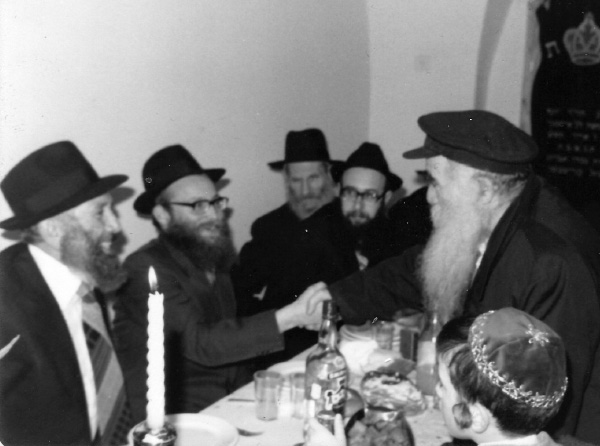

Devoted Shliach and Beloved Mashpia
R’ Sholom Dovber (Berel) Shur, shliach to Eretz Yisroel, was a great disseminator of Chassidus in Yerushalayim, in places and among people not yet exposed to the light of Chassidus. * To mark his tragic passing on 3 Tammuz 5753.

R’ Berel Shur a”h was born in Montreal on 4 Teves 5714 to R’ Chaim Shneur Zalman and Esther. His first teacher was his grandfather, R’ Dovid Aryeh Leib Morosov, the oldest son of the famous Chassid, R’ Chonye Morosov (may Hashem avenge his blood).
As a child, he once found money in the street. He knew the Halacha that one who finds money in a public place can keep it but he shared it with his classmates. This conduct, which he displayed in his childhood with material possessions, is one that he maintained when he was older with his spiritual possessions – whatever he had, he shared.
When he learned in Yeshivas Tomchei T’mimim in Montreal, although he was young, fourteen-fifteen years old, the rosh yeshiva, Rabbi Isaac Schwei loved to talk to him, not only on subjects they were learning in yeshiva but also on matters of conduct and guidance. He would have the young bachur help improve the spiritual standing of his friends, raising the level of the yeshiva higher and higher.
He learned in 770 from 5731 until 5735 when he was sent by the Rebbe to learn in Brunoy. There he was greatly influenced by the mashpia, R’ Nissan Nemanov.
ON SHLICHUS TO ERETZ YISROEL
In 5736, he was chosen by the Rebbe to be part of the group which was sent on shlichus to Yerushalayim. He was one of the shluchim who learned in Yeshivas Toras Emes and in the Tzemach Tzedek shul in the Old City. In 5738 he married Hadassah, daughter of R’ Nosson Vogel of London.
As a newly married man, he wore what was a novelty in Eretz Yisroel, an electronic watch with a regular watch dial. One of his friends, R’ Yehoshua Mondshine, who saw him wearing it, was told, “It’s a watch that inspires me to t’shuva. The second hand does not sweep around the dial like it does on other watches; it stops for a fraction of a second before moving on. This teaches me that time is passing and doesn’t stop, even if it seems when you look at it that it has stopped for a moment.”
The shluchim were sent to Eretz Yisroel in order to learn in the kollelim in Yerushalayim and Tzfas. It was first in Shevat of 5739 that the Rebbe wrote them a letter and suggested various options of how to continue their shlichus. Various possibilities were raised and only a few of them, who were initially sent to Yerushalayim or Tzfas, remained in those places.
At that time, R’ Shur’s position was clear: he was remaining on shlichus in Yerushalayim. He lived in the heart of one of the ultra-Orthodox neighborhoods, a place where the light of Chassidus had not yet reached. From there, he disseminated Chassidus not just directly but also indirectly, just by being there. His Chassidic appearance and demeanor won people over.
MASHPIA IN SHIKUN CHABAD IN YERUSHALAYIM
In the morning, he was a mashpia in the big shul in Shikun Chabad. Many distinguished people and talmidei chachomim would go to hear him when he farbrenged. There was a good reason for this – R’ Berel would spice what he had to say with things that he heard in his youth from R’ Yehuda Chitrik, R’ Peretz Mochkin, R’ Zev Gringlass, and R’ Nissan Nemanov. Many non-Lubavitchers would go to the shul on Shabbos Mevarchim, knowing that R’ Berel would farbreng. What many people didn’t know was that it affected his health. He had a weak constitution and after these farbrengens he would have to lie down, but that didn’t stop him.
R’ Berel was also the Baal Koreh in shul. One year, when he finished the Torah reading for Mincha on Tisha B’Av, he said, “What a Chassidishe parsha! Few verses, but so much Chassidus!” “And you will seek Hashem your G-d from there and you will find,” “and you will return to Hashem your G-d,” “You were shown to know that Hashem is Elokim, there is nothing but Him,” “and you shall know this day and place upon your heart that Hashem is Elokim.”
During the third Shabbos meal he would eat in a Poilishe beis midrash where he would speak words of Chassidus. The crowd listened avidly and enjoyed the wealth contained in Chassidus, which R’ Berel knew how to present to his listeners.
His special gift of being able to explain things along with a luminous countenance and love that he had for every Jew also endeared him to the yeshiva bachurim with whom he would farbreng on special occasions. Many of them, thanks to him, established times to learn Chassidus and some of them even became T’mimim. He would also give shiurim to N’shei Chabad and never missed a shiur, no matter the weather.
CHASSIDIC DIAMONDS
He worked in diamonds for which he had to use advanced machinery. One of his friends took an interest in this and asked to see how these machines worked. R’ Berel took a diamond and began demonstrating as he explained as follows: You take a neshama and check it closely to see whether it has a stain or even a speck that blocks the luster of the neshama. Now we have to remove the stain. To do that, we have to know its qualities so that our actions don’t cause harm instead of fixing it. We have two options; to use radiation or to use fire. It is not enough to know which is more suitable; we also have to know the right amount so as not to use too little or too much. It all must be done with love and care and even putting it through fire must be done with kindness and mercy. After all that, even if the cleaning process went well, there is no comparison to a neshama after a cleansing to a neshama that did not have a stain in the first place.
***
After a number of years, he left this work and began working in the t’fillin business. In choosing a leather craftsman and a scribe, personal financial considerations took second place. The most important things to him were the personalities and parnasa needs of the people he worked with. He found more spiritual satisfaction in this work even though his profits were not always enough to cover his expenses and effort. Sometimes, he himself would bring a bar mitzva boy his t’fillin and would say l’chaim with him and some warm words, infusing the occasion with Chassidic life.
CHINUCH
R’ Berel put a lot into chinuch and came up with original ideas now and then. One year he took the slaughtered Kaparos chickens in order to show the children, who had never seen how meat is koshered. Every year in Elul he would go to his daughter’s school to blow the shofar for the girls, since girls don’t usually have the opportunity to hear the blowing of the shofar on weekdays and even on Rosh HaShana they don’t necessarily get to see the blowing of the shofar from up close.
R’ Berel had a talent for music and a good voice. Many referred to him as a “baal menagen,” but he saw it differently. He said that someone with a sharp ear and a good voice, who can listen to a recorded niggun and sing it nicely, is not a baal menagen but a parrot. A baal menagen is someone who contemplates a niggun, davens with it, and lives with it!
***
Tragically, he died suddenly at home on the morning of 3 Tammuz 5753, leaving a void that has not been filled. May his memory be a blessing.
D. Levanon. "Devoted Shliach and Beloved Mashpia." Beis Moshiach, no. 882 (June 6, 2013).